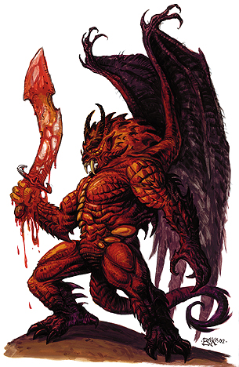

巴托第一层领主：拜尔
大型异界生物
生命骰数：26d8+286（403）
先攻权调整：+7
速度：40尺，飞行60尺（灵活性：一般）
防护等级：42（-1体形，+3敏捷，+5偏斜[deflection]，+15洞察，+20天生防护等级），接触22，措手不及39
攻击：+44/+39/+34/+29（近战，超大火焰巨剑+3），+35（近战，翅膀×2），+35（近战，撕咬），+35（尾扫）
伤害：2d8+25/19-20附加1d6火焰伤害与1秽恶伤害（近战，超大火焰巨剑+3），1d4+7（近战，翅膀×2），2d6+7附加剧毒与疾病（近战，撕咬），2d4+7（尾扫）
面宽/触及：5×5尺/10尺
特殊攻击：紧勒2d4+22，疾病，恐惧氛围，精通擒抱，类法术能力
特性：巴兹魔特性，伤害减免30/+5，异界生物特性，再生 7，法术抗力 30，召唤巴兹魔
豁免：强韧+26，反射+18，意志+23
属性：力量 40，敏捷 16，体质 32，智力 27，感知 27，魅力 25
技能：唬骗+33，攀爬+41，集中+37，手艺（武器制作）+21，交涉+15，易容+33，躲藏+25，威吓+37，方向感+21，跳跃+41，知识（奥术）+34，知识（贵族）+21，知识（位面）+21，聆听+34，潜行+29，搜索+34，观言察色+34，法术辨识+34，观察+34
特技：顺劈砍，黑暗圣言（Dark Speech），强力顺劈砍，精通先攻，强力攻击，秽恶武术（巨剑），武器专攻（巨剑）
气候/地形：任意
组织：独行
挑战等级：20
宝物：四倍标准
阵营：守序邪恶
进化：无
拜尔是九层炼狱中的一位新进领主，现任阿弗纳斯的统治者。比起炼狱的内部事务，拜尔更加关心血战的结果，这在炼狱领主中显得尤为特殊。拜尔是靠着他的实力和技巧（以及对恶魔的胜利）爬上了这个位置，所以这位前地狱炼魔并不在乎其他领主的意见。拜尔在黑暗八魔将中享有极高的声誉，这可不是能够被小看的影响力。
很多人认为，前任阿弗纳斯的领主扎瑞尔，仍然被关在拜尔的青铜堡垒里，拜尔吸取着他的力量来提升自己的能力。
拜尔的外观是一名长着宽大翅膀的地狱炼魔，绿色的液体从牙齿上滴下，红色的鳞甲覆盖着庞大的身躯，他手中总是持着一把散发着热气的锯齿利刃。他的徽章是利齿叼着一把钢刀。
战斗：
拜尔是一名战术专家，决不会在没有计划前投入战斗。他喜欢伏击和夹击，佯攻和疑兵。在个人战斗中，他倚靠着自己那把扭曲的超大巨剑。
紧勒（特殊）：当擒抱成功时，拜尔可以进行压制，造成2d4+22的钝击伤害。
疾病（特殊）：即使被拜尔撕咬的生物成功地豁免了剧毒，他仍然需要进行坚韧鉴定（DC 34），失败将会感染魔鬼之寒。疾病的潜伏期为1d4天，造成1d6力量伤害。受害者必须连续三次成功坚韧鉴定才能够复原。
恐惧氛围（生物特性）：拜尔可以自由制造出20尺的恐惧氛围。效果与“恐惧术”相同（施法者等级15，意志鉴定DC 30）。豁免成功的角色在24小时内不会被拜尔的恐惧氛围影响。所有巴兹魔对这种氛围免疫。
精通擒抱（特殊）：当拜尔用尾扫击中中型或更小的生物时，可以在造成伤害的同时尝试擒抱且不会导致借机攻击（擒抱+45），而且也可以在同一轮进行压制。拜尔也可以选择通常的擒抱，或是用尾卷起对手（擒抱上有-20的不利，但拜尔将不被视作正在进行擒抱）。在这两种情况下，成功的擒抱都附加着尾扫攻击的伤害。
剧毒（特殊）：拜尔的撕咬攻击附带剧毒（坚韧DC 34）。初始效果为1d6点体质伤害，附加效果为直接死亡。
类法术能力：随意施展“操纵死尸”，“渎神之语”，“媚惑人类”， “唤起死灵”，“亵渎术”，“侦测善良”，“侦测魔法”，“火球术”，“地狱火”（Hellfire），“人类定身术”，“高等隐身”，“反善良法阵”， “高等幻影”，“燃火术”，“变形自己”，“烟火术”，“暗示”，“无错传送术”，“邪恶灵光”，“邪居”，“火墙术”，一天一次“流星爆”，“魔法徽记（任意）”，“许愿术”。施法者等级视为19，鉴定DC 17+法术等级。
巴兹魔特性：拜尔可以用心灵感应于100尺内任何有语言的生物交谈。他可以在任何黑暗中视物，包括由“深幽黑暗术”制造的黑暗。拜尔对火焰伤害免疫，对酸液和寒冷有20的伤害减免。
异界生物特性：拜尔不能被更复或是复活。
快速恢复（特殊）：+3附魔等级或以上的神圣武器可以对拜尔造成正常伤害。
召唤巴兹魔（特殊能力）：拜尔可以每日两次自动召唤3名劣魔，奥塞魔，巴霸魔或是2名厄瑞尼斯女妖，恐纳魔，奇鲁魔。
个人财产：拜尔持有超大火焰巨剑+3，此剑在对抗恶魔时附魔等级，攻击加值和伤害加值视为+5，这是血战的遗产，他用这把剑斩杀过数以千计的恶魔。他随时佩戴着防护戒指+5。
拜尔的目标：
在地狱领主中，拜尔有着伪君子的名声。有人认为阿斯摩蒂而斯之所以默许了他的政变就是由于他没有那么多阴谋诡计。拜尔整天要忙着跟恶魔作战以至于根本腾不出时间来算计比他地位高的家伙，或者说，他的头儿。
拜尔只想要稳住他的地位，他曾经想要和拜尔泽布以及墨菲斯托尔斯结盟，但只换来一阵嘲笑。他背叛前任阿弗纳斯的领主扎瑞尔的事迹还留在他们脑海里。
拜尔的信徒
拜尔没有信徒。那些扎瑞尔的信徒并没有投向他的怀抱。
拜尔的手下
拜尔，一位军事指挥官，经常被强大的魔鬼军团包围事实上，他也有着两位恐纳魔战士，耶蒂卡黛儿（Yeddikadir）和娜露布兰卡（Nalebranc），他们甚至敢于和更强大的魔鬼动手。耶蒂卡黛儿也秘密地为毕莱而服务，但他只是监视着拜尔，并非准备背叛拜尔……到目前为止。
耶蒂卡黛儿和娜露布兰卡：
男性恐纳魔，8级战士
挑战等级 18
大型异界生物
生命骰数11d8+44+8d10+32（175）
先攻权加值 +2
速度 20尺，飞行50尺（灵活性一般）
防护等级 33，接触13，措手不及31
攻击：+24（近战，1d4+6，爪击×2），+23（近战，1d4+3，撕咬），+23（近战，1d3+3附带伤口，尾扫）或者+27/+22/+ 17/+12（近战，1d6+10附加1秽恶伤害，长鞭+2），+23（近战，1d4+3，撕咬），+23（近战，1d3+3附带伤口，尾扫）
面宽/触及：10×10尺/10尺
特殊攻击：恐惧氛围，类法术能力，震慑，创伤
特性：巴兹魔特性，伤害减免20/+2，异界生物特性，再生 5，法术抗力 24，召唤巴兹魔
阵营：守序邪恶
豁免：强韧+17，反射+11，意志+11
属性：力量 22，敏捷 14，体质 19，智力 14，感知 14，魅力 15
技能：唬骗+16，攀爬+21，集中+16，交涉+6，躲藏+11，威吓+4，，跳跃+10，聆听+14，潜行+17，搜索+16，观言察色+16，观察+16
特技：顺劈砍，闪避，异种武器掌握（长鞭），多次攻击（Multiattack），强力攻击，精通击破武器，秽恶武术（长鞭），武器专攻（长鞭），武器专精（长鞭）
恐惧氛围（生物特性）：耶蒂卡黛儿和娜露布兰卡都可以自由制造出5尺的恐惧氛围。效果与“恐惧术”相同（施法者等级12，意志鉴定DC 17）。豁免成功的角色在24小时内不会被他的恐惧氛围影响。所有巴兹魔对这种氛围免疫。
类法术能力：随意施展“操纵死尸”，“渎神之语”，“媚惑人类”，“亵渎术”，“侦测善良”，“侦测魔法”，“侦测思想”，“反制混乱”，“反制善良” ，“反善良法阵”，“高等幻影”，“燃火术”，“烟火术”，“暗示”，“无错传送术（自身加50磅物品）”，每日三次“火球术”，“闪电术”，每日一次“火墙术”。施法者等级视为12，鉴定DC 12+法术等级。
震慑（生物特性）：被耶蒂卡黛儿和娜露布兰卡用长鞭击中后，必须通过坚韧鉴定（DC 17）否则将震慑1d4轮。
创伤（特殊）：耶蒂卡黛儿和娜露布兰卡用尾扫造成的伤口每轮将造成2点伤害。多个伤口将导致伤害累加（譬如2个伤口4点伤害每轮）。成功使用医疗技能（DC 10）或是施展治疗魔法可以阻止伤口继续流血。
巴兹魔特性：耶蒂卡黛儿和娜露布兰卡可以用心灵感应于100尺内任何有语言的生物交谈。他们可以在任何黑暗中视物，包括由“深幽黑暗术”制造的黑暗。耶蒂卡黛儿和娜露布兰卡对火焰伤害免疫，对酸液和寒冷有20的伤害减免。
异界生物特性：耶蒂卡黛儿和娜露布兰卡不能被更复或是复活。
快速恢复（特殊）：酸液以及+2附魔等级或以上的神圣武器可以对耶蒂卡黛儿和娜露布兰卡造成正常伤害。
召唤巴兹魔（特殊能力）：耶蒂卡黛儿和娜露布兰卡可以每日一次召唤1d10名劣魔或1d6名巴霸魔（成功率50%）或1d6名哈玛魔（成功率35%）或一名恐纳魔（成功率20%）。
个人财产：长鞭+2，大钢盾+3，防护戒指+2，公牛之力药水×2